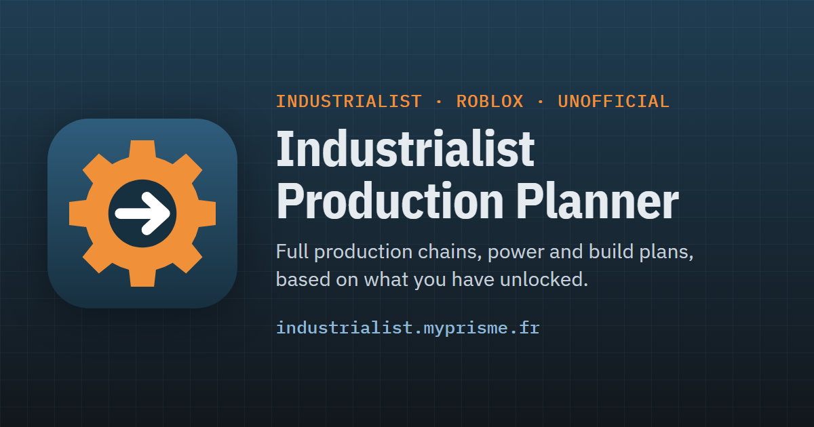

Maquette S33 — forme publique : seulement ce que la maquette S16 (maquette/public.html, validée) ne montre pas. Rien n'est branché. Le bouton « 💬 Remarque » et les liens « Remarque » / « Propositions » arrivent en S35 et S36 : ils ne sont pas dans ce lot.
1. L'en-tête au téléphone (375 px)
Aujourd'hui : trois lignes, et le menu défile (« Contribuer » coupé, P6). Proposé : ligne 1 = logo, nom court, « Non officiel », FR / EN, « ? » ; ligne 2 = les cinq entrées du menu, réparties sur toute la largeur, sans défilement ; ligne 3 = ton usine en bref (inchangée). Sur ordinateur, l'en-tête reste sur une ligne, avec « Non officiel » à côté du nom (comme S16).
Aujourd'hui
Calculateur146/146 recherches
« Contribuer » coupé ; les liens du menu font 22 px de haut.
Proposé — français
PlanificateurNon officiel
146/146 recherches12 400 RP$2,1 M
Liens du menu : 36 px de haut. Le nom long (« Planificateur Industrialist ») revient au-delà de 760 px.
Proposé — anglais
Production PlannerUnofficial
146/146 research12,400 RP$2.1M
Même disposition ; « Contribute » entier.
2. Le pied de page de ce lot
Le texte de la maquette S16, plus deux précisions venues du pied de page actuel, pour ne perdre aucun crédit : Fandom est sous CC BY-SA (pas NC), et la pousse des arbres vient du calculateur communautaire de la page Tree. La 3ᵉ ligne (« Envoyer une remarque », « Propositions des joueurs ») s'ajoutera en S35 et S36, quand le service existera.
Outil de fan, non officiel, fait par Orangentleman pour le jeu Roblox Industrialist.Données : wiki Industrialist (Miraheze, CC BY-NC-SA 4.0, images comprises ; Fandom, CC BY-SA), relevés en jeu, et pour la pousse des arbres le calculateur communautaire lié depuis la page Tree. En cas d'écart, le Recipe Book du jeu fait foi.3ᵉ ligne en S35 / S36 : 💬 Envoyer une remarque · Propositions des joueurs
Fan-made, unofficial tool by Orangentleman for the Roblox game Industrialist.Data: Industrialist wiki (Miraheze, CC BY-NC-SA 4.0, images included; Fandom, CC BY-SA), in-game readings, and for tree growth the community calculator linked from the Tree page. If they differ, the in-game Recipe Book wins.
3. L'image de l'aperçu (Discord)
L'image d'aujourd'hui (public/og-image.png) est en français : « Calculateur de production ». Proposé : la même image, en anglais, avec « Unofficial ». Sa source est un fichier du dépôt (scripts/og-image.html), rendu par Chrome sans fenêtre : pas de dépendance. Titre et phrase comme la maquette S16 ; og:locale en_US, fr_FR en variante.
Full production chains for Roblox Industrialist: machines, power, floor space and a build plan for every module, based on what you have unlocked.

4. L'attente d'un calcul long (onglet Usine)
Il y a déjà une barre d'avancement et « Annuler ». Proposé : le temps écoulé, un bouton « Arrêter » bien visible, et — seulement quand le calcul « recalculé pour l'usine entière » est choisi — une phrase qui propose le calcul module par module, plus rapide, en un clic. Si l'ancienne usine reste affichée (estompée) pendant le calcul, la même boîte se pose dessus ; aujourd'hui son bouton « Annuler » ne fait rien (défaut trouvé pendant l'état des lieux), il sera branché.
Toute l'usine — proposition : calcul en arrière-plan. Tu peux continuer à utiliser le site pendant ce temps.
Placement des modules (7 sur 13)46 %depuis 1 min 12 s
⏱ Le calcul recalculé pour l'usine entière peut prendre plusieurs minutes sur une grosse chaîne.
Whole factory — suggestion: computing in the background. You can keep using the site meanwhile.
Placing modules (7 of 13)46%for 1 min 12 s
⏱ Recomputing for the whole factory can take several minutes on a big chain.
Après « Arrêter » : « Calcul de toute l'usine arrêté. » avec « Relancer le calcul » et le même bouton « module par module ».
5. Recettes au téléphone
Aujourd'hui toutes les tuiles s'affichent d'un coup : 10 500 px de page. Proposé, sous 900 px seulement (sur ordinateur la liste a déjà sa propre colonne qui défile) : les 48 premières tuiles, puis « Afficher 48 de plus » ; une recherche ou un filtre repart à 48. L'objet ouvert reste toujours dans la liste (décision S5). Même chose en lignes.
Aluminum
Battery
Bolt
Cable
Circuit
Coal
…
…
(48 tuiles)
Page : moins de 3 000 px.
6. Les deux contrastes trop faibles (P5)
Il faut 4,5:1 pour le texte. Seules deux couleurs changent ; le reste mesure déjà 4,5:1 ou plus (relevé dans les deux thèmes au téléphone et sur ordinateur). Un test gardera chaque paire de couleurs.
Thème sombre — bouton principal
aujourd'hui 2,4:1 proposé 6,8:1 (texte sombre)
Thème clair — ⚠ de Recettes et du schéma
⚠ aujourd'hui 3,9:1⚠ proposé 5,4:1 (orange plus sombre)
Le schéma, l'usine et l'arbre (SVG) sont contrôlés à l'œil pendant le parcours final, dans les deux thèmes.
7. Ce qui change sans maquette
Point
Ce qui est fait
Cibles ≥ 24 px
Au téléphone, chaque bouton, case et lien hors d'une phrase fait au moins 24 px de haut (aujourd'hui : 42 cibles trop petites sur Planifier avec l'Usine ouverte, 12 sur Mon usine, 4 sur Contribuer). Les lignes s'espacent un peu, rien ne change de place.
Clavier
Chaque page faite au Tab ; Échap ferme les fenêtres et le focus revient au bouton qui les a ouvertes ; schéma, usine et arbre se déplacent aux flèches et se zooment avec + et − (déjà là, à vérifier partout).
Lecteur d'écran
La réponse recalculée est annoncée (déjà aria-live, à vérifier) ; chaque fenêtre a un titre ; le schéma et l'usine disent qu'ils ont une version lisible : l'onglet « Machines ».
Nom
« Planificateur Industrialist » / « Industrialist Production Planner » partout : en-tête, titre de l'onglet, aperçu, site.webmanifest.
Questions (S33) — « ok » suffit si la proposition te va.
En-tête au téléphone (écran 1) : nom court, « Non officiel », menu sur toute la largeur, ton usine en bref sur une 3ᵉ ligne : ça te va ?
Pied de page (écran 2), image d'aperçu en anglais (écran 3) : d'accord ? Après la mise en ligne, il faudra coller le lien dans ton salon réservé pour voir l'aperçu (Discord garde parfois l'ancien quelques heures).
Calcul long (écran 4) : temps écoulé, « Arrêter », et le bouton « module par module » : d'accord ?
Recettes au téléphone (écran 5) : 48 tuiles puis « Afficher 48 de plus » : d'accord ?
Titres de Planifier (reste P11) : la maquette S16 montrait « Que veux-tu produire ? ». Je propose de changer les quatre titres en questions : « Que veux-tu produire ? » / « Combien d'énergie te faut-il ? » / « Que veux-tu rechercher ? » / « Combien veux-tu gagner ? » (en anglais : « What do you want to make? » / « How much power do you need? » / « What do you want to research? » / « How much money do you want to make? »). Ou garder les titres d'aujourd'hui (« Produire un objet »…) ?
Pollution (reste F4, « %/h » peu parlant) : le jeu l'écrit en %/h (page Pollution du wiki : « 8.64%/h »). Je propose de garder l'unité du jeu et de dire ce qu'elle est : « Pollution ajoutée : +0,8 %/h » avec une bulle « pollution ajoutée au monde par heure, comme sur la page Pollution du wiki ; elle ralentit la pousse des arbres » (ce que le site dit déjà ailleurs). Ça te va, ou tu as un mot du jeu en tête (et ce que le jeu affiche exactement) ?